In this lab, participants build the same Executive Overview canvas used in the instructor-led workbook. The canvas connects to the Claims star schema in Autonomous AI Lakehouse and presents claim volume, denial, payment, processing, and risk signals in one command-center view.
Participant hands-onEstimated time: 45 minutesOracle Analytics CloudClaims star schema
Target outcome
Executive Overview canvas
Reference build
The completed canvas should use a compact command-center layout: filters at the top, six KPI tiles with sparklines, a denial-rate hotspot heatmap, denied-claims donut, claim-type review table, bubble analysis, and a month-over-month denial-rate trend.
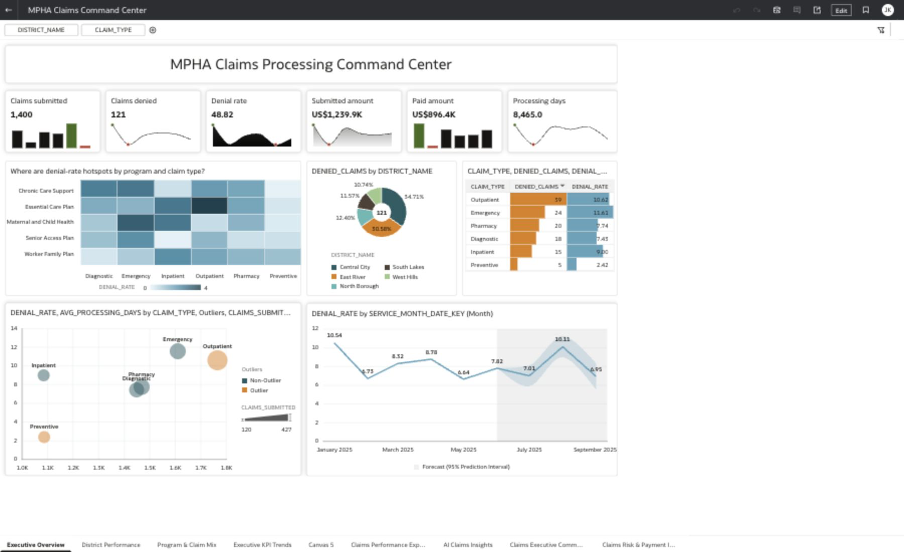
Completed Executive Overview canvas in OAC preview mode. Use this as the participant target state.
Assistant prompt: Which districts contribute the most denied claims?Expected response: Central City contributes the largest share of denied claims, followed by East River and North Borough. Review the donut and claim-type table together to prioritize the district-level review.
Assistant prompt: Which claim types need denial review?Expected response: Outpatient and Emergency claims should be reviewed first because they combine high denied-claim volume with visible processing pressure.
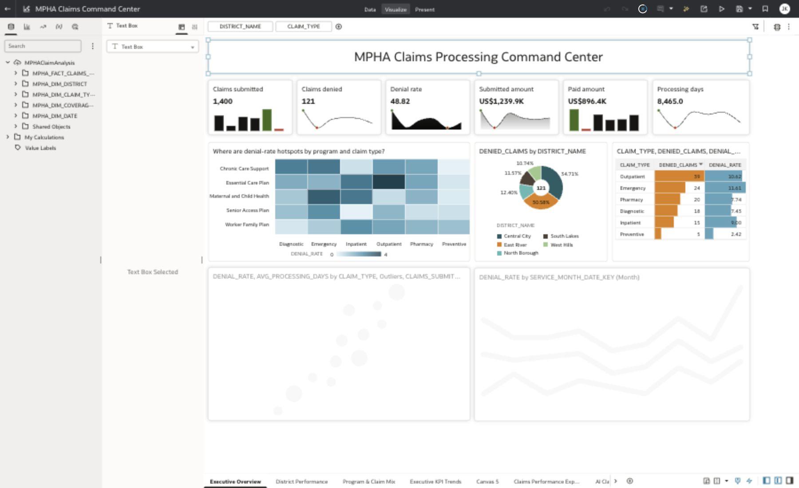
Authoring mode shows the same canvas with the Claims star schema dataset and filters available for editing.
Teaching intent
This canvas answers executive questions rather than just showing field names. Every major visual title is phrased as a business question so first-time participants understand why the visual exists.
Task 1
Connect OAC to Autonomous AI Lakehouse
8 minutes
Admin preparation
From the OAC home page, open Create and select Connection.
Select Oracle Autonomous AI Lakehouse as the connection type.
Name the connection clearly, for example AIAnalyticsForGoldData.
Choose the environment-specific encryption mode: TLS for wallet-free connectivity or Mutual TLS when a wallet is required.
Enter the Lakehouse user, password, and service name provided by the facilitator, then save the connection.
Start from OAC home. The Create menu is used for both connections and datasets.
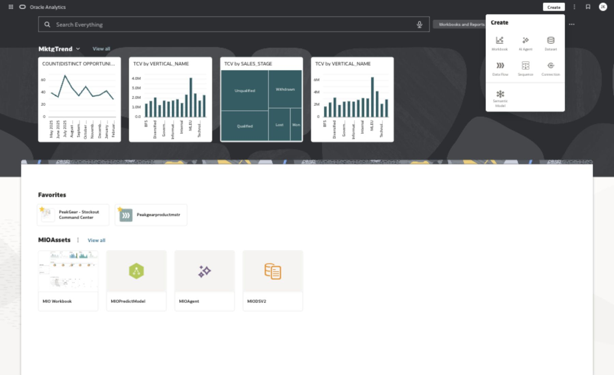
Open Create and choose Connection when the Lakehouse connection is not already prepared.
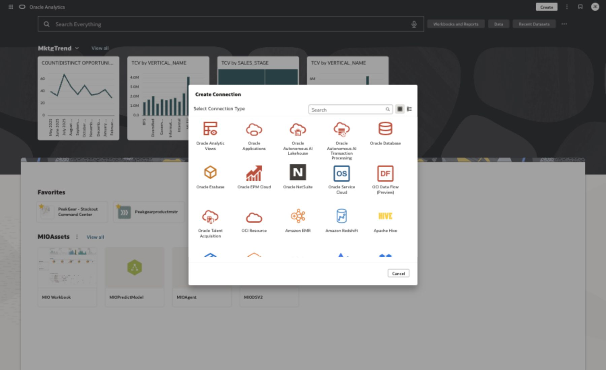
Select Oracle Autonomous AI Lakehouse as the connection type.Enter the connection details. Use the exact Lakehouse service and credentials assigned for the workshop.
Expected result
The OAC home page has a saved connection that can browse the Gold-serving Claims star schema in Autonomous AI Lakehouse.
Task 2
Create and verify the Claims self-service dataset
10 minutes
Admin preparation, then participant verification
From OAC home, choose Create -> Dataset.
Select the Autonomous AI Lakehouse connection created in Task 1.
In the Create Dataset page, expand the connected schema and add these Claims star schema tables:
MPHA_FACT_CLAIMS_MONTHLY, MPHA_DIM_DATE, MPHA_DIM_DISTRICT, MPHA_DIM_COVERAGE_PROGRAM, and MPHA_DIM_CLAIM_TYPE.
Drag or double-click the five tables onto the Join Diagram canvas.
Prepare the self-service data model by confirming that the Claims fact table connects to the Date, District, Coverage Program, and Claim Type dimensions.
Right-click the fact table and preserve grain before saving the dataset.
Use the profiling view to confirm values, distributions, nulls, and sample rows before creating the workbook.
Open the dataset in a workbook and confirm the Claims fact and dimensions appear in the data panel.
Create Dataset begins by selecting the Lakehouse connection.
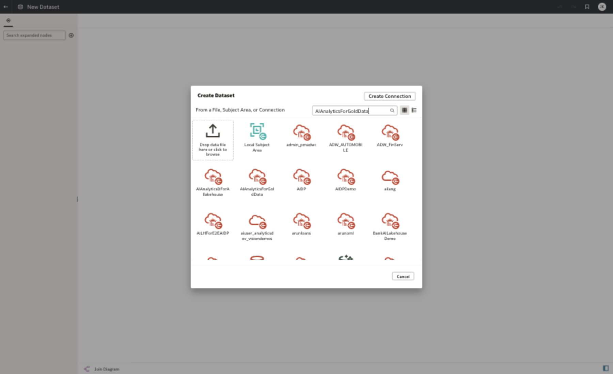
Search for the Lakehouse connection when the OAC environment has many available connections.Expanded schema checkpoint: the connected AI Lakehouse schema, Claims star schema tables, Join Diagram, and profiling grid are visible together for MPHAClaimAnalysis.
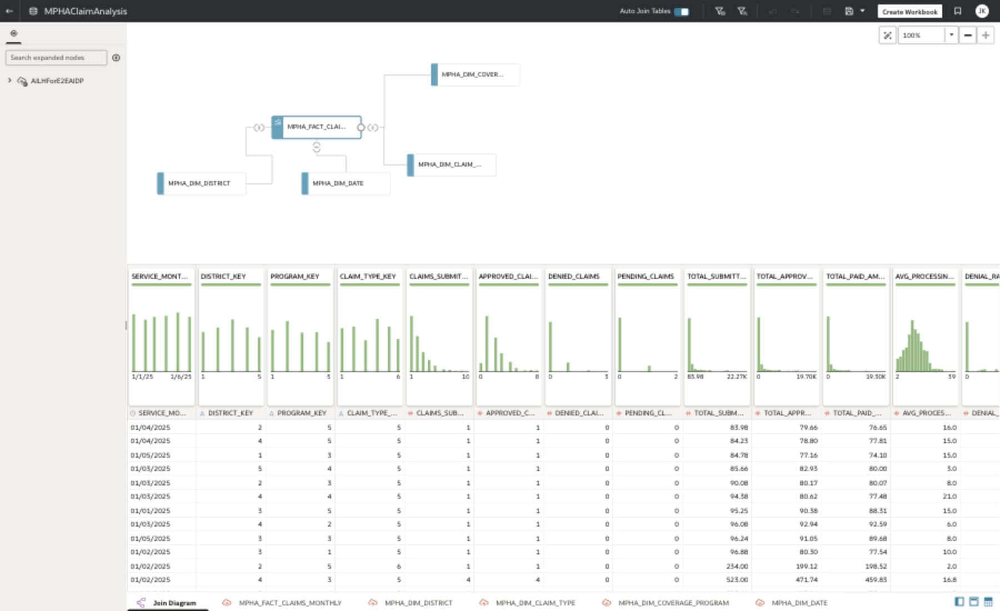
The live MPHA self-service data model in OAC. The upper panel confirms the drag-and-drop Join Diagram; the lower panel provides the data profiling and sample-row view.
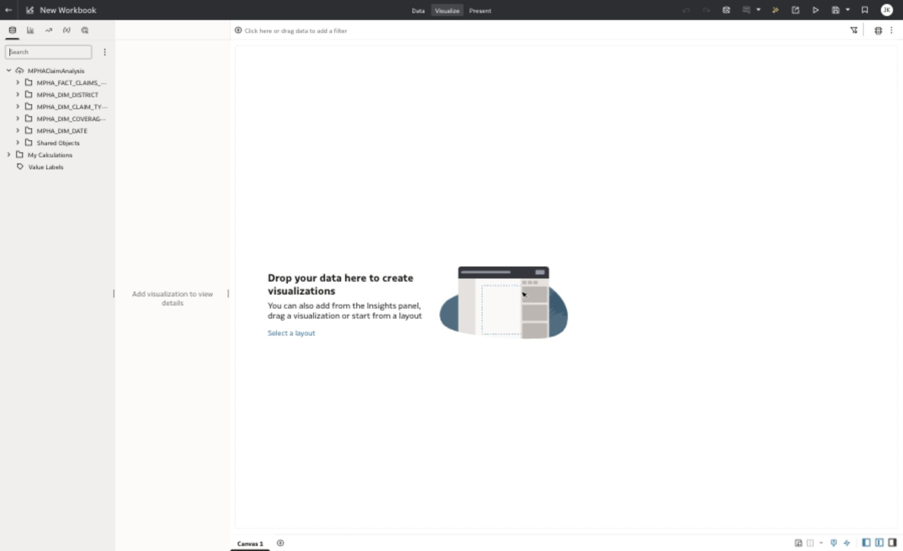
Participant verification: the Claims fact and conformed dimensions are visible in the workbook data panel.
FactMonthly claims measures
DateService month
DistrictGeographic accountability
Program and typeCoverage and claim mix
Task 3
Enable indexing for OAC Assistant
7 minutes
Admin preparation
In the workbook data panel, right-click the dataset name MPHAClaimAnalysis.
Select Inspect.
Open the Search tab.
Set the index target to Assistants and Homepage Search.
Use recommended index settings or choose the searchable business columns manually.
Click Run Now and wait for indexing to complete before using Assistant prompts.
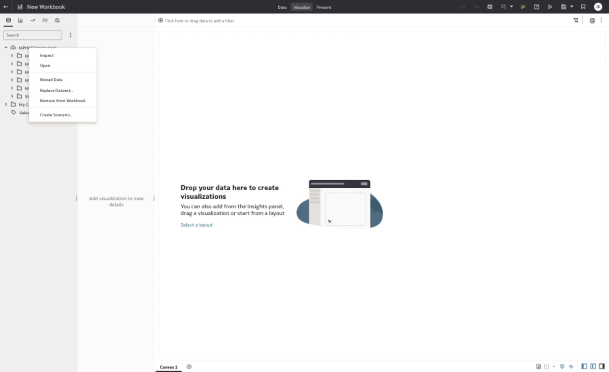
Right-click the dataset in the workbook data panel and choose Inspect.The Search settings tab confirms the dataset is indexed for Assistants and Homepage Search.
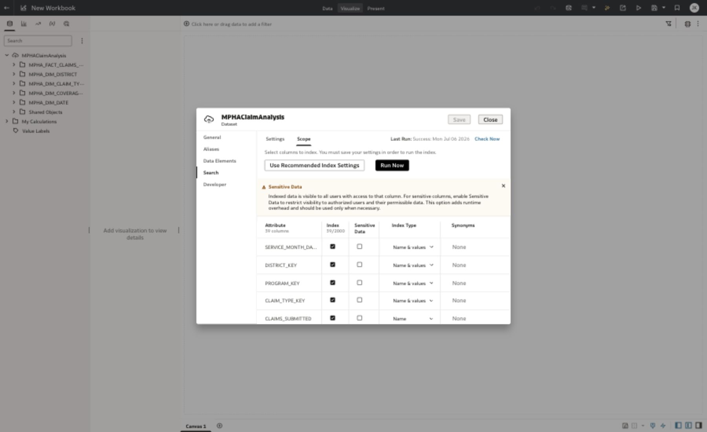
Review the Scope tab so participants understand which Claims star schema fields Assistant can use.
Assistant boundary
OAC Assistant answers questions against indexed Claims star schema fields only. Playbook or policy-document questions belong in the Claims and Policy Copilot lab.
Task 4
Create the Executive Overview workbook shell
7 minutes
Participant step
Create a workbook from MPHAClaimAnalysis or the prepared dataset.
Rename the first canvas to Executive Overview.
Set the canvas layout to Freeform.
Add a title text box: MPHA Claims Processing Command Center.
Add dashboard filters for DISTRICT_NAME and CLAIM_TYPE.
Use round visual borders, light center shadow, and equal spacing across all cards.
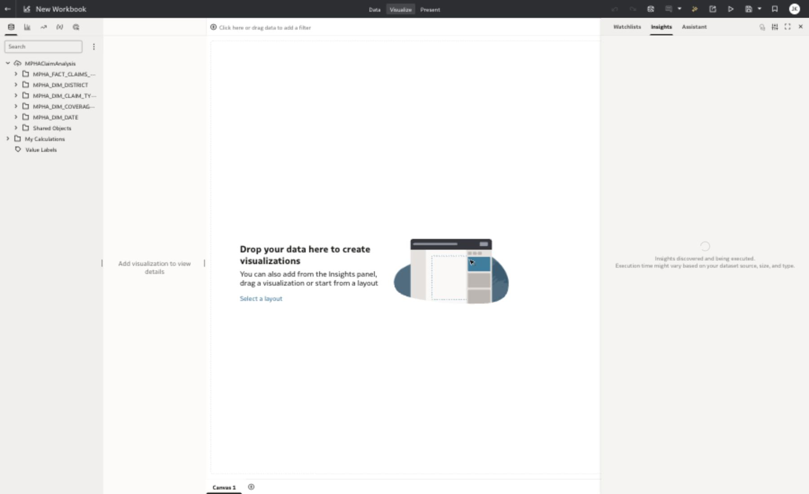
Start the workbook from the Claims dataset. The fact and dimensions stay visible while building the canvas.Authoring mode shows the target shell: top filters, KPI band, diagnostic visuals, and canvas tabs.
Task 5
Build the six KPI tiles with sparklines
12 minutes
Participant step
Use the native OAC KPI tile visualization. Put the metric value at the top and use SERVICE_MONTH_DATE_KEY (Month) as the category column for the sparkline. Remove the metric field title inside each tile and keep only the custom tile title.
KPI title
Measure
Sparkline style
Claims submitted
CLAIMS_SUBMITTED
Bar
Claims denied
DENIED_CLAIMS
Line
Denial rate
DENIAL_RATE
Area
Submitted amount
TOTAL_SUBMITTED_AMOUNT
Line with area
Paid amount
TOTAL_PAID_AMOUNT
Bar
Processing days
AVG_PROCESSING_DAYS
Line
Set sparkline height and width to stretched.
Enable high and low markers where available.
Use consistent sizing so all six KPI tiles align in one row.
The KPI band uses mixed sparkline styles so the cards do not feel repetitive.
Task 6
Add diagnostic visuals, trend, and Assistant prompts
14 minutes
Participant step
Where are denial-rate hotspots by program and claim type?Build a heatmap using coverage program on rows, claim type on columns, and denial rate as the color measure.
Which districts contribute the most denied claims?Build a donut chart with denied claims as the value and district name as the color/category.
Which claim types need denial review?Build a table with claim type, denied claims, and denial rate. Add data bars or conditional formatting for fast scanning.
Do high-volume claim types also take longer or get denied more?Build a bubble chart using claim type labels, claims submitted on the X axis, average processing days on the Y axis, and denial risk/outlier coloring where available.
How is the denial rate trending month over month?Build a line chart using service month as the category and denial rate as the measure. Add a forecast if available.
What can Assistant answer from the indexed dataset?Open Assistant and ask claims-only prompts based on the indexed star schema fields.
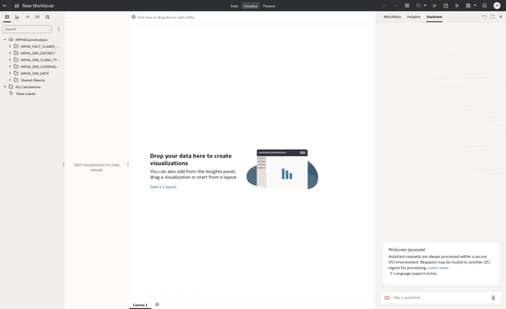
Assistant is available after dataset indexing. Keep prompts grounded in the Claims star schema.
Which districts have the highest claims denial rate?
Which claim types need denial review?
Compare denied claims and processing days by claim type.
How is denial rate trending by month?
Design note
Keep visual titles as questions. They make the dashboard easier to explain to first-time users and stop the canvas from reading like a list of database columns.
Task 7
Validate, save, and explain the canvas
5 minutes
Participant step
Confirm the filter controls update all visuals together.
Confirm KPI tiles show sparklines and do not show duplicate metric field labels.
Confirm all visual titles are business questions.
Check that no visual overlaps another visual at the standard workshop display size.
Save the workbook as MPHA Claims Command Center.
Final validation view: filters, KPI band, diagnostic visuals, and trend are visible on one canvas.
Expected result
The workbook gives executives one clean page for claims submitted, denied, paid, and delayed, with clear diagnostic paths into district, program, and claim-type issues.
Next step
DIY Facility Access Daily dashboard challenge
Participant extension
After the instructor-led Claims Executive Overview, participants should build their own Facility Access Daily dashboard. They should reuse the same pattern: one star schema, a small filter strip, six high-value KPIs, and business-question titles for each diagnostic visual.
Challenge prompt:
Build a facility-operations executive view that explains where wait times, occupancy, staffing pressure, and access risk require immediate leadership action.